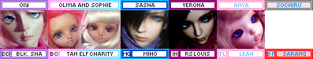

Definitely and totally non biased opinions on those event that happened.
The name "Den of Angels" is a mistranslation of Tenshi no Sumika (source). The site was originally a yahoo group but was quickly outgrown due to the 32 MB limit. Aimee then created a personal doll webpage along with a phpBB forum. In 2009, Aimee's doll homepage was removed and only the forum remained.
Around 2010 to 2015, Den of Angels was invite only. Current users could invite others, but their account was on the line if they invited someone who had an account already or had been banned. The reason to close off the forum could have been spam bots or scammers but I dont believe the true reason was ever announced. This happened before the recast epoch.
A DoA user had a fire in her home and one of her dolls managed to survive. Check out her thread for photos of the damage and restoration.
If you think these girls were as catty as the girls on /cgl/ you are dead wrong. It was more tame than you'd expect.
This forum is completely gone, just like DoD and many others. It was an 18+ forum based on erotica, so of course they had some funky photos... I may have collected a few of the worst I could find while it was still up. this link is incredibly not safe for life. i previously said this forum was resinality, but i am fairly sure it was condoll after all.
Back around 2009, a friend in my meetup group told us that Portland had not one, but two separate meetup groups! One had only Volks elitists and did not allow any dolls but volks, while the other did not allow volks dolls, but allowed everything else. I have found no proof of this rumor being true. Who knows what group people who owned both would join!
Chicabi used to go by "Chica Bonita" until they googled their own name.
In 2008, HZ released the Roro line, which was lovingly(?) dubbed the "yaoi starfish".
In 2011, Impldoll announced a new tiny scorpion boy. They gave him the most loving name they could think of, Penis. His name is Colin now.
In 2006, Doll Chateau created a new tiny doll named Miriam to promote child abuse awareness. A lot of people were shocked at the original promo photos of her in the speedball inspired outfit and other questionable poses. The promo photos were reshot in a candy theme.
In 2019, Volks released two new standard DDP girls, Ribbon and Colon. After a few good laughs, Colon's name was changed to Coron.
I used to really not like Volks dolls when I first started researching BJDs. How have they become one of my favorites now?? Faceups.
Early Volks faceups were extremely basic and plain! Check out the standard models up to the 2010 versions. Sure they look fine, but they dont look $700 fine. By this time, other companies were offering amazingly beautiful dolls for a fraction of the price. Default Volks dolls just looked like a joke next to them.
Around 2011 or so, Volks stepped it up. The 2014 standard models are lovely! You can see this in the Dollfie Dream releases as well, but DDs also had a sculpting style upgrade as well. I could finally see the beauty in a Volks doll without having to look up customized ones.
Now the old faceups look really classic. I think I'd still probably wipe one though.
HZ was a Chinese BJD company starting in the late 2000s that has since closed down. The doll designer was Heise, a powerful Chinese fujoshi.
HZ released 1/3 scale boys starting in 2009. Many of the promo photos were archived on this blog. A few are pretty spicy!!
Anything I write here is probably spicier than anything posted on Den of Demons
The creator of DoA. She wrote a book called Japan Ai: A Tall Girl's Adventures in Japan and I highly recommend you spend a couple bucks on an old copy if you love Volks.
Aeryn had tons of boys every teenage girl had a crush on! She has a bunch of stories about her dolls' characters but you can skip those if you're over 18. Skip them if you're under 18 too because they are SPICY.
Sold a recast Ryoya Kanoe to Knibitz (probably unknowingly). A few months later, she recieved a marketplace ban (unrelated to the recast incident) from DoA and hasn't really been active since. She did that thing where you disappear off the face of the Earth with multiple open transactions.
Belladonna (Carmen) She was once quite a popular photographer and faceup artist with many beautiful boys. Sisters with Aileen/gardenofmoons/frozen wings and Sam/morbidollz. All based out of Montreal.
Belladonna once had 2 doll heads run over by a car while she was painting them (source).
They all made very edgy and cool OCs together and took great photos. Both Belladonna and Morbidollz were faceup artists. I wish my sister was this fun.
They're now moderately successful cosplayers together. Check them out on tiktok or don't.
US faceup artist and photographer. Has a darker, emo style that screams late 2000's. Also goes by asainemuri.
Indonesian photographer. Loves men and you can tell. Total fujoshi and I say that in the nicest way possible.
Faceup artist, photographer, and pioneer of the oversized sweater, yoga pants, alpaca wig minifee movement. I'm not sure any other artist has had such an impact on the western community.
She doesn't participate in BJDs anymore, but has moved on to other art projects. Her influence will likely last forever though.
Not at all doll famous, but her (now ex-)husband bought her a F-54 if you want to copy her. As far as I know, she has no plans to get rid of her.
Claimed to have used period blood for a faceup among other interesting life choices. Got caught scamming over multiple sites.
Love it or hate it, Elfgutz's drippy, sickly, bright style had a huge impact even outside of the BJD community. A ton of people copied the style for their own makeup.
Trying to jog my memory on what happened...
A doll corset seamstress who did beautiful work, and then never sent the item paid for. Former proud recast owner.
Kind of a cautionary tale on why you should label your dolls. She seemed to fill her house with an extreme amount of dolls in the late 2000s and can no longer identify them to sell them. DoA users have been helping her! Watch her sales posts if you want discontinued dolls from that time. She seems to have a limitless supply.
Australian doll customizer was known for turning severely damaged dolls into grotesque monsters. dA link
French customizer known for her crew of hauntingly carved Zaoll and Unoa dolls. dA link
Mendokusai published photostories starring her minifee and a few other minis on DoA and LiveJournal. The series was called "Beneath the Midnight Sun". There's a Wiki, but since the images were all hosted on photobucket, we are likely to lose all the visuals to time.
Am has been publishing photostories on her website since 2004. There's two stories: one about the entire cast of dolls and a BL specifically focused on two of her boys. As of April 2025, Am has concluded her story.
Between 2006 and 2013, Beamlette posted photostories on her website.
Havra is publishing photostories on her Wordpress blog. Adult themed with
Fallen from Briah contains many photostories created between 2004 and 2008.
These dolls were all super popular at some point in the English speaking doll community, so you'd see a lot of them around! Most of my info was stolen or inspired by this thread on DoA.
The "El Army" is no joke!
In all honesty, almost all of the old CP sculpts should be on this list. Lishe, Chiwoo, Shiwoo, (DES and AES) Soo, Soony
Once and extremely popular beautiful boy. Crobi isn't particularly popular now, but was releasing some of the prettiest men of the early 2010s. Switch has taken their place in recent years.
I'm not sure if everyone and their dog even had one, but there are even cosplays of this doll.
The first super dollfie released by Volks. Her mouth is a little lopsided and they make sure to keep it that way every time they resculpt it in another size.
After all these years, she is still extremely popular and iconic!
Not a particular sculpt, but for a decent sum of money, DIM offered to sculpt doll heads. Usually, they were ordered in group orders to bring down the cost of each head. You could choose between 50% and 80% likeness. Alledgely, there was a Korean sculpting team and a Chinese sculpting team. You always pray your sculpt is assigned to the Korean team. They eventually stopped people from asking for Gackt.
I can't identify these ones by first glance but people would not stop talking about them before 2010! They were once one of the most expensive dolls you could own. They were the first of the 70cm (uncle) range dolls.
In the olden days, you used to have to order Dollshe dolls through Luts, then Tensiya, a company run by Anu. At least internationally, they were not sold regularly and were pretty hard to get ahold of! You'd often see them going for $2000+ USD.
The abbreviation for sleeping heads, SA, stands for slack afternoon.
Highly sought after in the early days and was extremely tough to obtain. You had to enter a lottery for one through a proxy! Secondhand, Unoa girls were around $700. Access to Mandarake and Dollyteria as well as Unoalchemy lowered that price a ton. Still very popular and much easier to get now!
So many people seemed to have male versions of this doll. Sand off the chest and you're good to go. Technically an SD sized doll, but pretty significantly shorter than most at 52cm tall!
Andreja (Nicolle's Dreams) had and painted one and the rest was history. Probably the first doll a lot of people saw through Youtube or Instagram. If you want to gain a large social media following, this is your girl.
originally a female sculpt with some giant lips. you'll see most of them as boys though.
Everyone used to have a goofy little image in their signature showing the dolls they had. Angelden has a little more info! Unfortunately all the images are gone, but there's some archived! There were many more non-Volks icons as well and many can be found here on livejournal. Here's the last one I made for my dolls in 2010. It's over DoA's signature size limit!!
Here's one I made for 2022 using the livejournal link! I'm out of room so I can't buy any more dolls. I had to make the Kiki myself so steal that one if you need it.
Everything changed when recasts became easily accessible around 2012. This also happened to occur around the rise of tumblr.
Recasts used to be something to fear. They meant being scammed. I dont believe anyone was looking to buy a recast in the early days. Posts discussing recasts on DoA weren't deleted, as long as recasts were portrayed negatively. You can still find many posts about these in the discussion archives.
The big change occured when people found out you could message luo over skype, send him some money over paypal, and get a doll in a week. He didnt have a website or a storefront, but a facebook profile where he updated the new dolls he made molds of. There were some other recasters, but some made recasts of recasts which had serious shrinkage and detail loss.
At this time, the community was moving from forums to social media platforms, like facebook and tumblr. These platforms didn't villainize recasters so everyone was able to speak freely about them. A forum called Castaways also appeared, which was recast friendly.
This caused the largest split ever in the BJD commuity, far worse than Volks elitism. The entire online community was split into pro-artists (or anti-recast) vs pro-recasts. Many internet users started putting their stance on the issue in their social media bios. Nearly every discussion devolved into a fight about recasts.
November 16th, 2014 became the first pro bjd artist day, where everyone could virtue signal their support of the doll artists by posting a photo of their dolls saying "I'm pro artist!!!!!" This continued for a few years and has slowed down, but everyone's stance still remains in their social media bios. The fight still occurs everywhere it gets the chance.
During the DoA anniversary triathlon, everyone was discussing and laughing at the entries on 4chan's /toy/. Some were good and some were good for a laugh. An anon who was also laughing about the bad entries posted their own entry in the contest which later won the contest.
Someone (who had a stick up their butt) notified the mods that the winner of the contest had been shit talking other entrants on 4chan. Botflybaby admitted to the posts and the mods decided to revoke her prize because of bad sportsmanship.
The moral of the story is either dont make fun of peoples work or post your own dolls in a separate post. You can decide that one yourself.